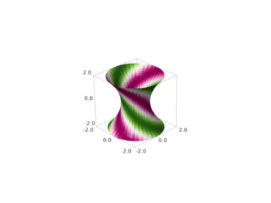

Surfaces of revolution#
AUTHORS:
Oscar Gerardo Lazo Arjona (2010): initial version.
- sage.plot.plot3d.revolution_plot3d.revolution_plot3d(curve, trange, phirange=None, parallel_axis='z', axis=(0, 0), print_vector=False, show_curve=False, **kwds)#
Return a plot of a revolved curve.
There are three ways to call this function:
revolution_plot3d(f,trange)where \(f\) is a function located in the \(x z\) plane.revolution_plot3d((f_x,f_z),trange)where \((f_x,f_z)\) is a parametric curve on the \(x z\) plane.revolution_plot3d((f_x,f_y,f_z),trange)where \((f_x,f_y,f_z)\) can be any parametric curve.
INPUT:
curve- A curve to be revolved, specified as a function, a 2-tuple or a 3-tuple.trange- A 3-tuple \((t,t_{\min},t_{\max})\) where t is the independent variable of the curve.phirange- A 2-tuple of the form \((\phi_{\min},\phi_{\max})\), (default \((0,\pi)\)) that specifies the angle in which the curve is to be revolved.parallel_axis- A string (Either ‘x’, ‘y’, or ‘z’) that specifies the coordinate axis parallel to the revolution axis.axis- A 2-tuple that specifies the position of the revolution axis. If parallel is:‘z’ - then axis is the point in which the revolution axis intersects the \(x y\) plane.
‘x’ - then axis is the point in which the revolution axis intersects the \(y z\) plane.
‘y’ - then axis is the point in which the revolution axis intersects the \(x z\) plane.
print_vector- If True, the parametrization of the surface of revolution will be printed.show_curve- If True, the curve will be displayed.
EXAMPLES:
Let’s revolve a simple function around different axes:
sage: u = var('u') sage: f = u^2 sage: revolution_plot3d(f, (u,0,2), show_curve=True, opacity=0.7).show(aspect_ratio=(1,1,1))
If we move slightly the axis, we get a goblet-like surface:
sage: revolution_plot3d(f, (u,0,2), axis=(1,0.2), show_curve=True, opacity=0.5).show(aspect_ratio=(1,1,1))
A common problem in calculus books, find the volume within the following revolution solid:
sage: line = u sage: parabola = u^2 sage: sur1 = revolution_plot3d(line, (u,0,1), opacity=0.5, rgbcolor=(1,0.5,0), show_curve=True, parallel_axis='x') sage: sur2 = revolution_plot3d(parabola, (u,0,1), opacity=0.5, rgbcolor=(0,1,0), show_curve=True, parallel_axis='x') sage: (sur1+sur2).show()
Now let’s revolve a parametrically defined circle. We can play with the topology of the surface by changing the axis, an axis in \((0,0)\) (as the previous one) will produce a sphere-like surface:
sage: u = var('u') sage: circle = (cos(u), sin(u)) sage: revolution_plot3d(circle, (u,0,2*pi), axis=(0,0), show_curve=True, opacity=0.5).show(aspect_ratio=(1,1,1))
An axis on \((0,y)\) will produce a cylinder-like surface:
sage: revolution_plot3d(circle, (u,0,2*pi), axis=(0,2), show_curve=True, opacity=0.5).show(aspect_ratio=(1,1,1))
And any other axis will produce a torus-like surface:
sage: revolution_plot3d(circle, (u,0,2*pi), axis=(2,0), show_curve=True, opacity=0.5).show(aspect_ratio=(1,1,1))
Now, we can get another goblet-like surface by revolving a curve in 3d:
sage: u = var('u') sage: curve = (u, cos(4*u), u^2) sage: P = revolution_plot3d(curve, (u,0,2), show_curve=True, parallel_axis='z',axis=(1,.2), opacity=0.5) sage: P.show(aspect_ratio=(1,1,1))

A curvy curve with only a quarter turn:
sage: u = var('u') sage: curve = (sin(3*u), .8*cos(4*u), cos(u)) sage: revolution_plot3d(curve, (u,0,pi), (0,pi/2), show_curve=True, parallel_axis='z', opacity=0.5).show(aspect_ratio=(1,1,1),frame=False)
One can also color the surface using a coloring function of two parameters and a colormap as follows. Note that the coloring function must take values in the interval [0,1].
sage: u, phi = var('u,phi') sage: def cf(u,phi): return sin(phi+u) ^ 2 sage: curve = (1+u^2/4, 0, u) sage: revolution_plot3d(curve, (u,-2,2), (0,2*pi), parallel_axis='z', color=(cf, colormaps.PiYG)).show(aspect_ratio=(1,1,1))
 The first parameter of the coloring function will be identified with the parameter of the curve, and the second with the angle parameter.
Another colored example, illustrating that one can use (colormap, color function) instead of (color function, colormap):
sage: u, phi = var('u,phi') sage: def cf(u, phi): return float(2 * u / pi) % 1 sage: curve = (sin(u), 0, u) sage: revolution_plot3d(curve, (u,0,pi), (0,2*pi), parallel_axis ....: ='z', color=(colormaps.brg, cf)).show(aspect_ratio=1)